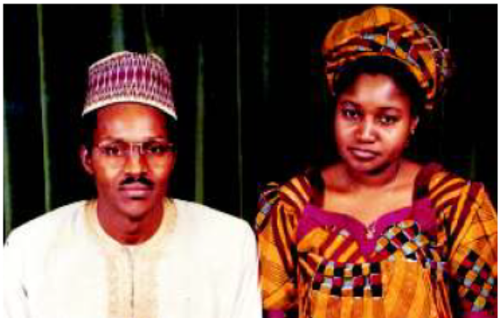
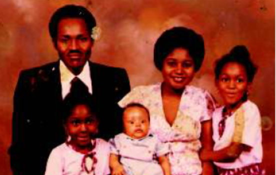

Late Hajiya Safinatu Muhammadu Buhari was born to the family of Late Alhaji Yusuf Mani, a fulani descendant of Shehu Usman Danfodio and Late Hajiya Hadizatu Mani, on the 11th December, 1952 in Jos, Capital of present day Plateau State of Nigeria.
An indigene of Mani Local Government in Katsina State, Late Hajiya Safinatu started her primary school in Tudun Wada Kaduna (1 959-1960) but was later transferred to Nasarawa Primary School now Dikko Memorial Primary School in Katsina when her father Late AIh. Yusuf Mani was transferred to Lagos to work as Private Secretary to Late Alh Musa Yar’adua who was Commissioner for Lagos Affairs in the Federal Cabinet of the First Republic.
After her Primary School, Late Hajiya Safinatu proceed to Women Teachers College Katsina where she obtained her Grade II Teachers Certificate in 1971.
Late Hajiya Safinatu got married to her husband Gen. Muhammadu Buhari two days after her graduation from Women Teachers College Katsina at the age of 18.
Though she met her husband in 1966 at the age of 14 when Major General Muhammadu Buhari then a Major in the Nigerian Army came visiting to her family house at Cameroun Road, Lagos in company of his friend Late Major Gen Shehu Yar’Adua(Rtd).
The marriage was delayed due to the outbreak of the Nigerian Civil War and her father’s desire to see her further her western education to a higher level before marriage. 
Her marriage to Major General Muhammadu Buhari was blessed with five beautiful children, namely, Zulaiha, Fatima, Musa (Late), Hadiza and Safinatu Buhari.
On the 19th of January, 1984, Late Hajiya Safinatu Buhari became First Lady of the Federal Republic of Nigeria when her husband Major General Muhammadu Buhari assumed the mantle of leadership as Head of State, Federal Republic of Nigeria.
As first lady, her daily routine starts with prayers, reading newspapers and doing domestic works at home. At official level, she was involved with hosting official guest particularly when visiting heads of states come with their wives.
One memorable moment for Late Hajiya Safinatu was hosting the Gambian First Lady in the ancient city of Kano where they visited the city wall and one of the markets in company of wife of the then military administrator of Kano State, Mrs Halima Hamza.
At her leisure in the State House, Late Hajiya Safinatu spent time collecting and compiling traditional Hausa and Fulani recipes which she later published after leaving state house for future generation. The title of her book is (“Our Delicious Menus” Recipes, Seasonings, and Culinary Ethics) published in 1999 by Nigerian Defence Academy Press, Kaduna
Her advice for future first ladies “They should aim towards achieving their set objectives so as to attain a feeling of self-fulfillment after they might have departed from the state house”
Her believe is that any Woman who finds herself in the position of the First Lady must exercise patience and understanding with people irrespective of their tribe, ethnicity, religious beliefs or geographical locations.
As a vanguard for Women Empowerment and Emancipation, Late Hajiya Safinatu agitates that Wives of Head of States should be given the opportunity to speak on matters of National interest but was quick to advice that they should do so with all senses of responsibility and serve as Mothers of the Nation by setting good examples.
Her hobbies include reading, community works, passion for her husband, children and relatives, accommodative and helping the needy. Late Hajiya Safinatu would have been a historian going by her passion for history of past events which she always shares with her children, relatives and the public. A lot of people will testify to her love for the children of the less privileged in our society.
A close look at Late Hajiya Safinatu shows that her cultural, traditional and religious beliefs and upbringing influenced her a lot particularly in her mode of dressing which she believes must conform to Islamic precept and the role she must portray as a loving mother and former First Lady.
A shy and retiring woman, Late Hajiya Safinatu stayed quietly close to her family after leaving state house, concentrating her energy mainly on the up bring of her children.
In 1998 Hajiya Safinatu was diagnosed to be diabetic in far away Saudi Arabia. She battled with the ailment for 8 years. Her desire is to live and impact positively on the lives of upcoming generation but when death shocking,Hajiya Safinatu surrendered all her good wishes for the future generation to the cold hands death.
Hajiya Safinatu died on the 14th day of January 2006.